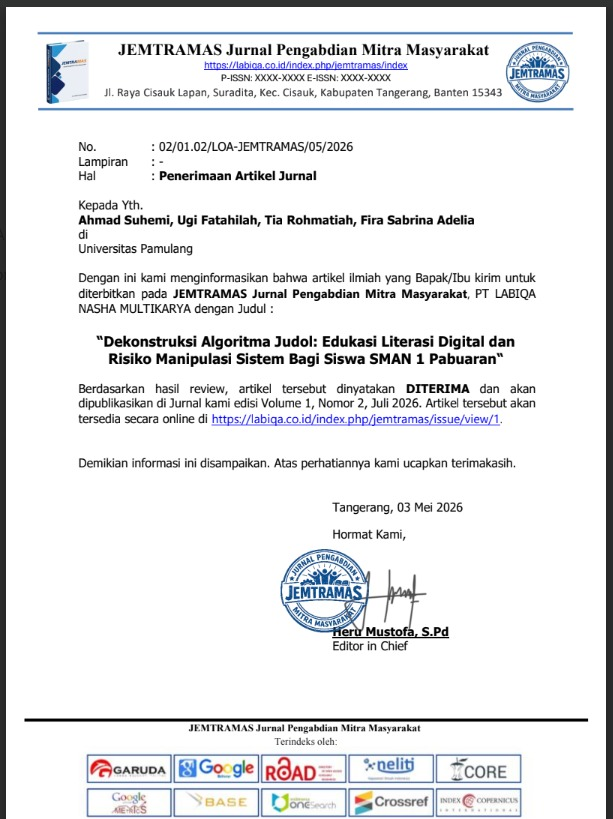
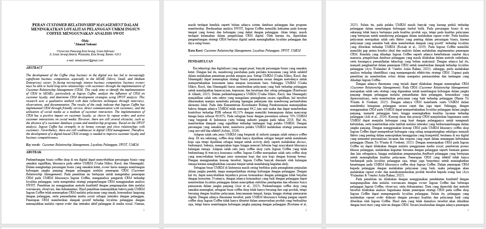

Artikel ilmiah yang mengkaji mekanisme algoritma dan strategi manipulasi digital pada platform judi online sebagai media edukasi literasi digital bagi siswa. Penelitian ini berfokus pada peningkatan pemahaman peserta terhadap risiko manipulasi sistem serta pentingnya berpikir kritis dalam menghadapi ancaman di era digital.

Mengembangkan penelitian mengenai implementasi Customer Relationship Management (CRM) untuk meningkatkan loyalitas pelanggan pada UMKM Ingsun Coffee. Penelitian memanfaatkan analisis SWOT sebagai pendekatan strategis untuk mengevaluasi kondisi bisnis dan merumuskan rekomendasi dalam membangun hubungan pelanggan yang lebih efektif dan berkelanjutan.